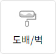

<button onclick="toggItem(this);">
	
</button>
<script>
	function toggItem(param) {
		var $img = $(param).find('img');
		b_toggImg($img);
	}

	/*이미지 제어*/
	//todo: 2번째 인자로 separator 받을 수 있도록
	{
		function b_onImg(img) {
			var $img = $(img);

			if (!($img.attr('src').indexOf('-on') > -1)) {
				$img.attr('src', $img.attr('src').replace('.', '-on.'));
			}
		}

		function b_offImg(img) {
			var $img = $(img);

			if ($img.attr('src').indexOf('-on') > -1) {
				$img.attr('src', $img.attr('src').replace('-on.', '.'));
			}
		}

		function b_toggImg(img) {
			var $img = $(img);

			if (!($img.attr('src').indexOf('-on') > -1)) {
				b_onImg($img);
			} else {
				b_offImg($img);
			}
		}
	}
</script>